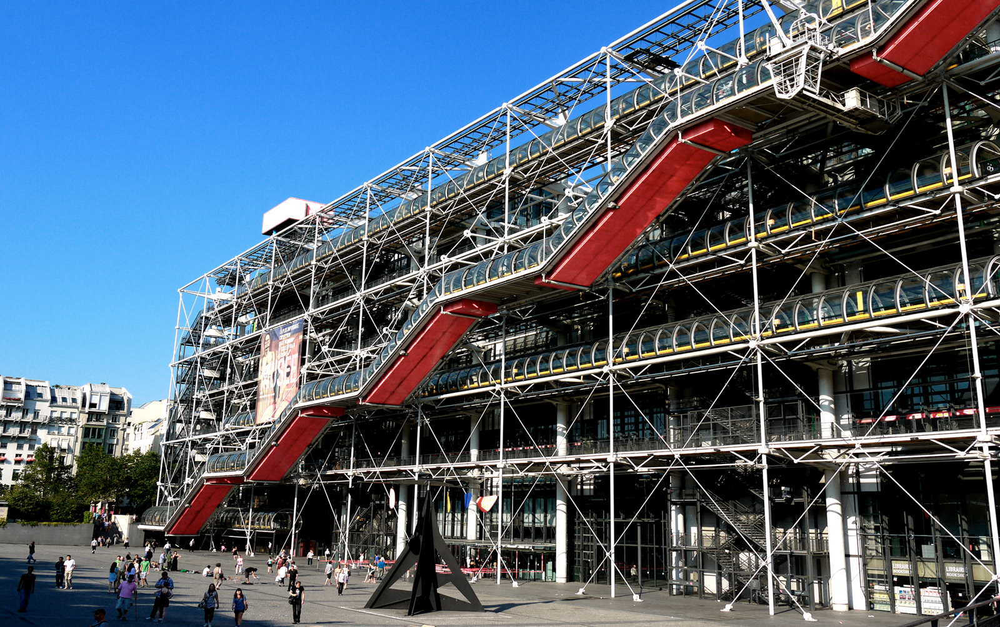

建築特色
龐畢度中心（法語：Centre Georges-Pompidou）全名為龐畢度國家藝術和文化中心（Centre national d'art et de culture Georges-Pompidou），俗稱博堡（Beaubourg），是一棟座落於法國首都巴黎第四區的複合建築，位於蒙特吉爾街、瑪萊區及萊阿勒區（Les Halles）附近，龐畢度中心也是一棟高科技建築。
龐畢度中心內部包括公共資訊圖書館（Bibliothèque Publique d'Information）、法國國立現代藝術美術館（Musée National d'Art Moderne）與聲學、音樂研究和協作學院（Institut de Recherche et Coordination Acoustique/Musique）。
資料來源：維基百科：龐畢度中心
